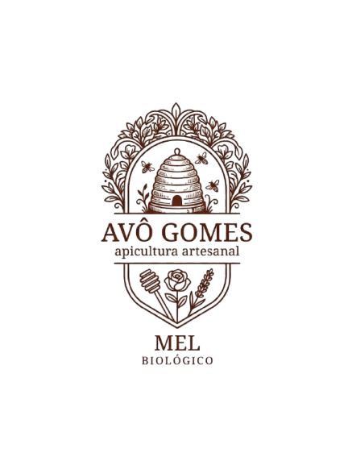

IMAGEM DO PRODUTO

MEL DO AVÔ GOMES
Descubra um mel inspirado na tradição, na natureza e no cuidado de quem conhece verdadeiramente o trabalho das abelhas.
Ver a nossa lojaA NOSSA HISTÓRIA
O Mel do Avô Gomes nasceu de uma paixão pela apicultura e pela natureza.
Inspirada nos conhecimentos transmitidos de geração em geração, a nossa marca procura preservar a autenticidade de um produto simples, natural e cheio de personalidade.
Conhecer a nossa história →DA NOSSA LOJA
Conheça algumas das variedades do Mel do Avô Gomes.
“
Mel do Avô Gomes
O NOSSO COMPROMISSO
Valorizamos a natureza e o papel essencial das abelhas no nosso ecossistema.
Cada etapa é realizada com atenção, dedicação e respeito pelo produto.
Mantemos viva a ligação entre o conhecimento tradicional e uma visão moderna.